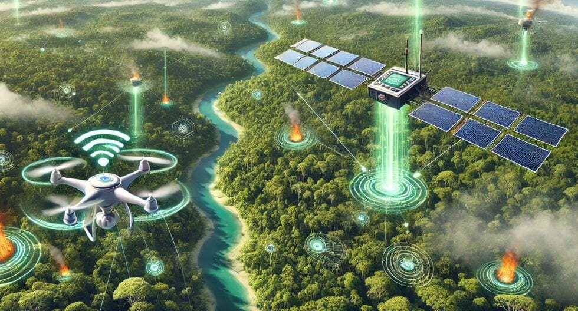

Anthropic
Pesquisa aponta aceleração no desenvolvimento de inteligências artificiais da Anthropic
Uma pesquisa independente identificou que os modelos de inteligência artificial da Anthropic estão aprendendo a realizar tarefas específicas aproximadamente duas vezes mais rápido do que há um ano. O estudo também aponta que a própria IA está ajudando no desenvolvimento de novas versões, levantando discussões sobre segurança e controle tecnológico.

Senado aprova projeto de IA para proteção ambiental
O Senado aprovou um projeto que utiliza inteligência artificial, drones e sensores para identificar incêndios, desmatamentos e auxiliar na recuperação ambiental.
Saiba MaisGoogle desenvolve IA que ensina robôs a realizar tarefas mais complexas
O Google DeepMind apresentou o Gemini Robotics 2.5, uma inteligência artificial capaz de ajudar robôs a aprender movimentos e executar tarefas físicas com maior precisão. A tecnologia apresentou avanços em testes de laboratório e aplicações industriais.
Saiba Mais